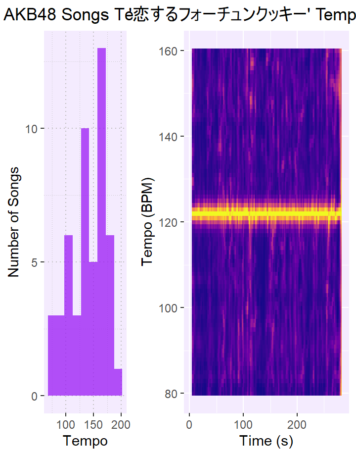
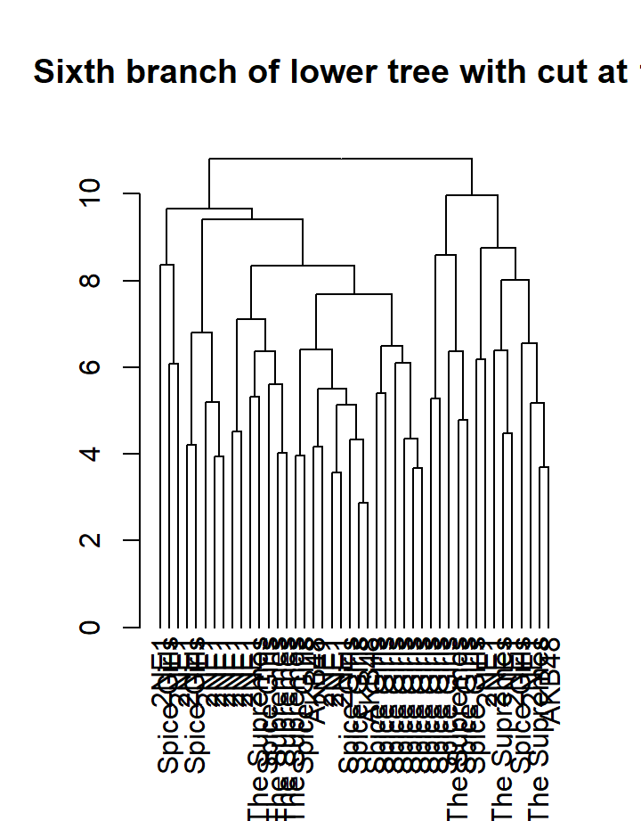
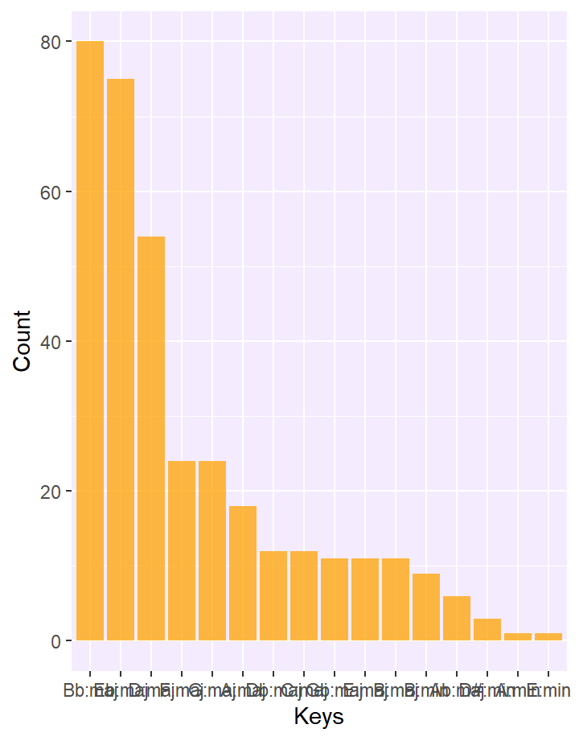
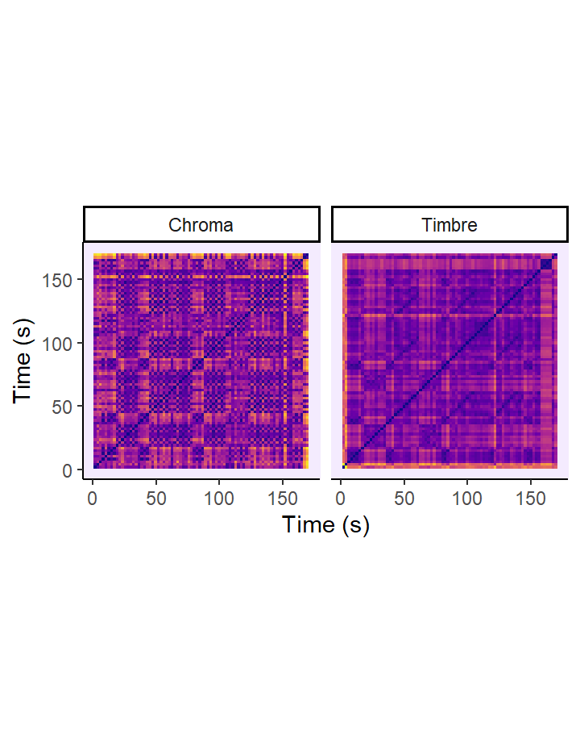
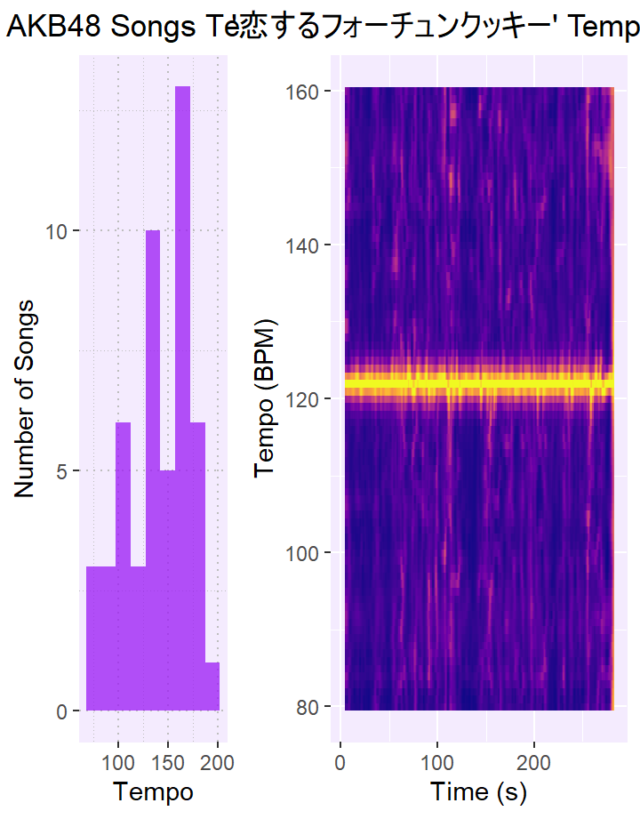
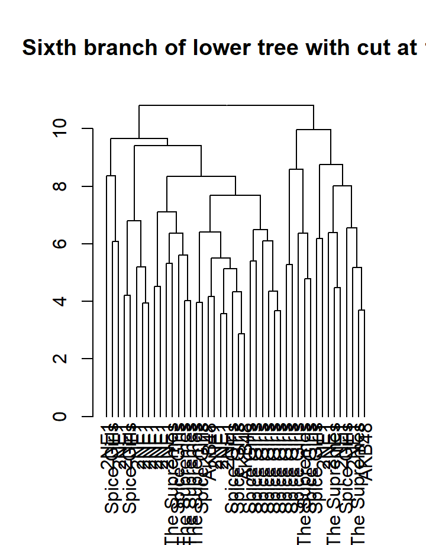
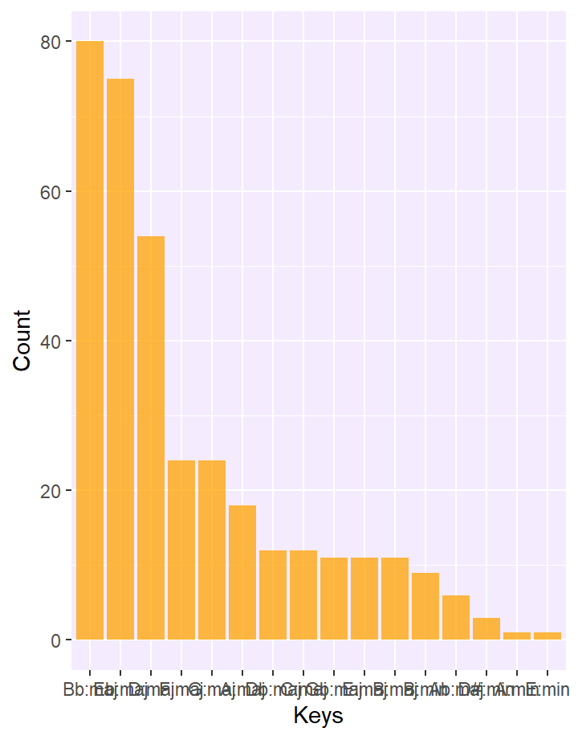
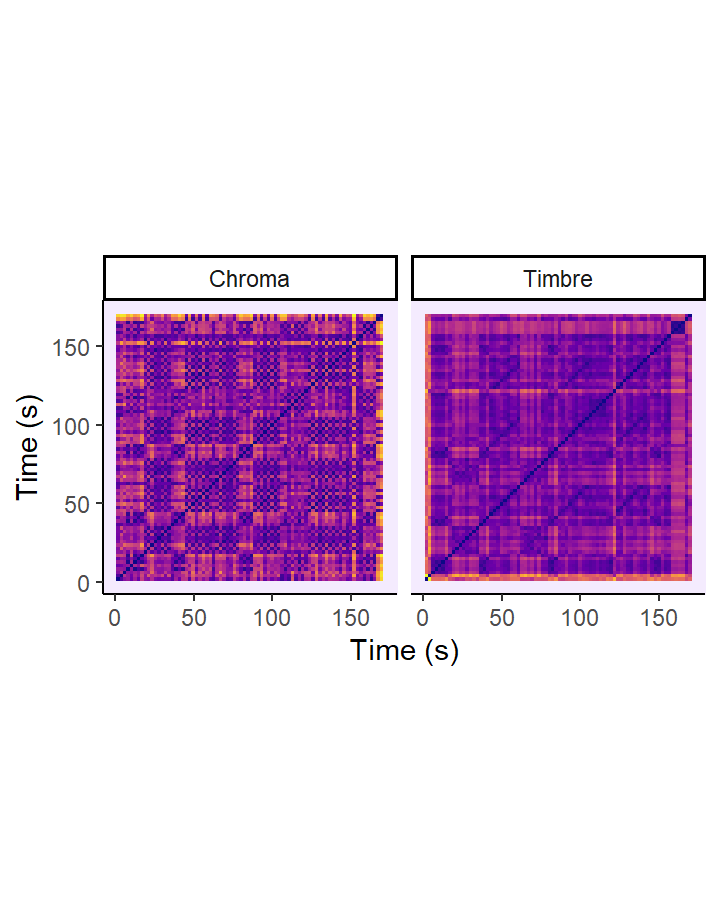
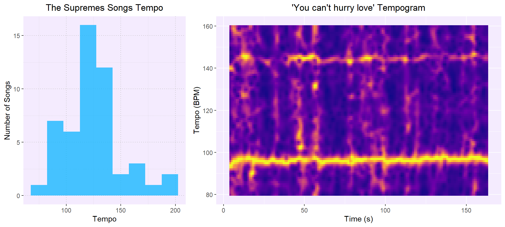
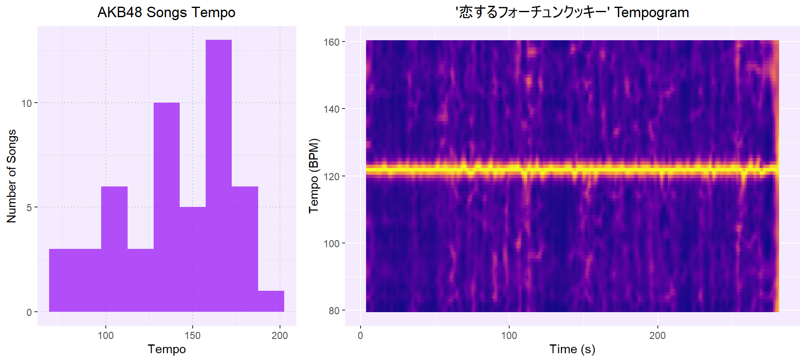
In general, we can see an upgoing trend in terms of the overall tempo of the playlists; Spice Girls is centered around 100 bpm, The Supremes and 2NE1 songs mostly fall between 110 and 140 bpm and AKB48 is more widespread but peaks at 160 bpm. Furthermore, all the biggest hits have one consistent tempo throughout the whole song that falls within the margin of the playlist. Therefore, the biggest hits are quite representative for the group in terms of tempo, since they do not differ greatly from the other songs in the playlists.
From the tempogram, it is quite evident that Wannabe has a tempo of around 110 bpm throughout the whole song. There are no changes in tempo, since there is just a straight horizontal line. From the tempo histogram, it appears that the highest peak is around 100-110 bpm as well. This means that roughly a third (13 out of 42) of the songs fall in this category, including Wannabe. Furthermore, most other songs are in the surrounding bins. Therefore, the biggest hit Wannabe is not unique in terms of the tempo for Spice Girls.
The tempo histogram has two clear peak, showing that 16 out of 50 songs from The Supremes have a bpm of about 120 and 12 songs have a bpm of about 130. From this place songs are more likely to have a lower tempo, making the 130 also the highest common value. The tempogram shows that You cant hurry love falls on the lower side of the spectrum with a bpm of about 95 throughout the whole song. Although this does not fall within the most common margin, it is still quite a representative value for the complete playlist. However, what is interesting is the vague yellow line at about 145 bpm in the tempogram. This indicates that a higher bpm has been detected that is prevalent.
This histogram has a two extreme peaks that form into one very clear peak. This peak contains two thirds (24/36) of the songs from the playlist. The peaks cover a range from 110 to 140 bpm. The tempogram shows that 2NE1s biggest hit also falls within this margin, with a constant tempo of 130 bpm. Therefore, this song represents the high-tempo playlist quite well.
The histogram has three distinct peaks (100-115 bpm, 130-145 bpm, 160-175 bpm) with increasing values: the first peak consists of 6 songs, the middle peak shows 10 songs and the last peak corresponds with 13 songs. However, from the tempogram, it appears that the biggest hit does not fall within one of these peaks with a tempo of just over 120 bpm. Therefore, this song does not seem super representative for the playlist. Nonetheless, since it falls between two peaks it actually is not that far off, since a higher binwidth would have made it an element of a peak.
The Spice Girls is a British group that was formed in 1994 with five members. Their main genre is pop. With their 11 singles they have claimed a total of more than 100 million record sales, making them the best selling girl group in the world.
The Supremes comes in second place with 66 singles and 50-100 million claimed record sales. They were known for their R&B/ soul music from 1959 till 1977. They originally started with four members, but their have been ten different members in total.
Turning to Asia, we have the South-Korean group 2NE1. The four members of this group were active from 2009 till 2016 and they have brought out 18 singles, resulting in 66 million claimed record sales. They explored the R&B side of K-pop.
Lastly, we have the biggest pop group in the world AKB48. The group currently consists of 80 members divided over 5 teams. The group has been active since 2005 and produced 59 singles, giving them over 60 million claimed record sales.
The list of the best-selling girl groups worldwide that has been used for this portfolio was created in 2017, and thus may be a bit outdated. Furthermore, the sources that were used to create the list may not be reliable. Nonetheless, for this portfolio, the list has only been used as a rough indication to establish what a popular girl group is. The four chosen groups are all the best-selling in their own country, however, they do not make the top 4 globally. Although Spice Girls and The Supremes are number 1 and 2 respectively, 2NE1 takes the fourth place worldwide and AKB48 comes sixth globally. The complete top 6 can be found below.
Top 10 best-selling girl groups:
| Group | Country | Records |
|---|---|---|
| Spice Girls | UK | > 100 million |
| The Supremes | US | 50-100 million |
| The Andrews Sisters | US | > 75 million |
| 2NE1 | KR | > 66 million |
| TLC | US | > 65 million |
| AKB48 | JP | > 60 million |
A popular group does not automatically mean that all their songs are popular as well. It is often the case that the group has one especially popular song, whereas the rest are not as popular. For instance, Wannabe by the Spice Girls is the best-selling girl group single, so this presumably is a big reason why the group is the best-selling girl group as well. In this portfolio, I have therefore chosen to focus on the most popular song of each group. The analysis of these songs can be found under Biggest Hits and the analysis of the full playlists per group can be found under Full Repertoire. The most popular song is based on Spotifys track popularity. The values can be found in the table below, but keep in mind that the values should only be compared between songs of one group. Since, for instance, The Supremes was popular when Spotify was not even invented, which may influence the track popularity.
Most and least popular songs
| Most popular | Popularity | Least popular | Popularity | |
|---|---|---|---|---|
| Spice Girls | Wannabe | 77 | A Mind Of Its Own | 26 |
| The Supremes | You Cant Hurry Love | 71 | Let Me Go The Right Way | 16 |
| 2NE1 | I Am The Best | 62 | LIKE A VIRGIN | 24 |
| AKB48 | 46 | (TeamA) | 26 |
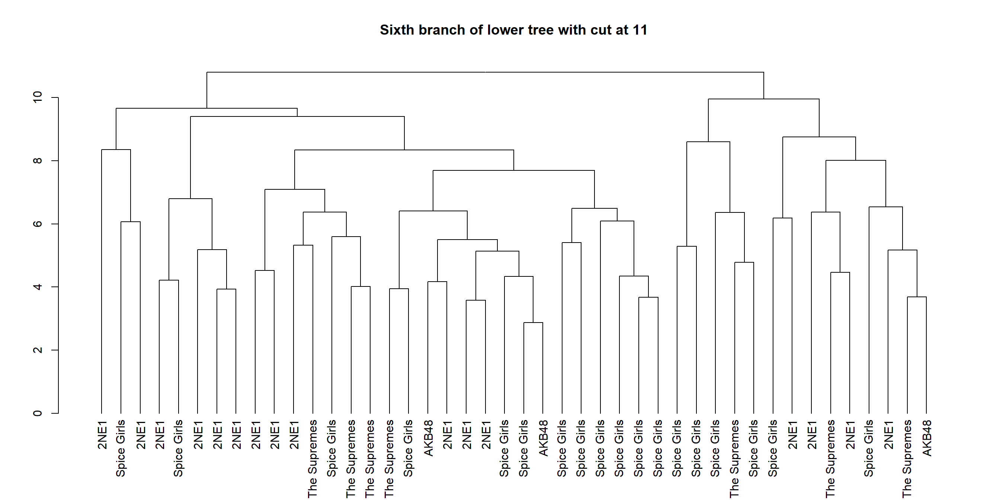
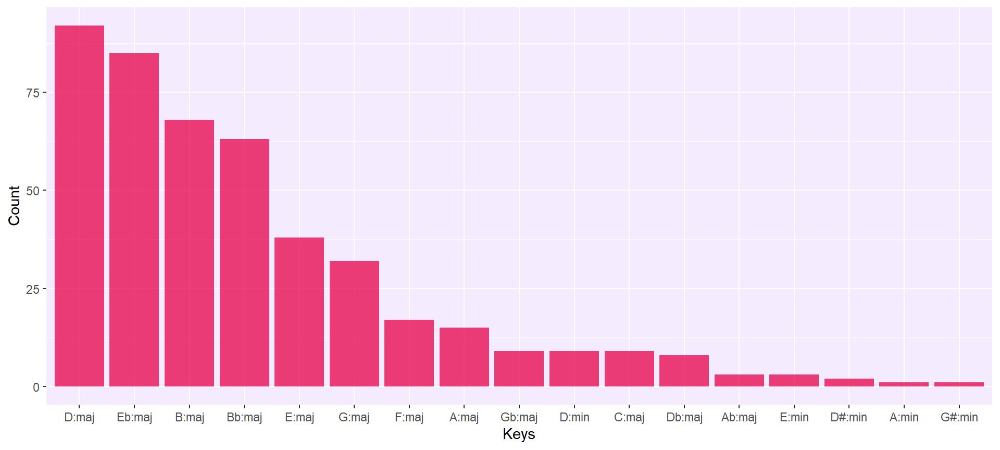
The minor keys have almost no place in the songs from the four girl groups. This means that their songs mostly evoke positive energy. Furthermore, the D-major and Eb-major are very prominent in all playlists. These two keys have Triumphant, Victorious War-Cries and Cruel, Hard, Yet Full of Devotion, respectively as emotive expressions. The emotions of D-major seem to correspond with the high valence, high energy found in the mood indicator graph and the Eb-major key corresponds with the mid-valence, high energy results.
In the This is Spice Girls playlist, almost all major keys occur more often than the minor keys. In general, the major keys evoke positive emotions. The most dominant key is the D-major key, closely followed by Eb-major. The D-major keys emotive expression is Triumphant, Victorious War-Cries and Eb-majors emotive expressions consists of Cruel, Hard, Yet Full of Devotion. This suggests powerful messages with a happy tone.
In the songs of The Supremes major keys are clearly preferred over minor keys, with B-major being the absolute winner. This key has the following emotive expressions: Harsh, Strong, Wild, Rage. This may be considered as low valence, high energy in the mood indicator graph.
2NE1 seems to have a really strong preference for its keys. There is a clear distinction between their top 3 keys (Bb-major, Eb-major and D-major) and the other keys. The emotive expressions of Bb-major, Eb-major and D-major are Joyful, Quaint, Cheerful, Cruel, Hard, Yet Full of Devotion and Triumphant, Victorious War-Cries, respectively. This suggests quite joyful songs in general with sometimes a more daunting emotion.
In the This is AKB48 playlist, the winner is the Eb-major key, followed by the Bb-major, B-major and D-major keys. The Eb-major key expresses Cruel, Hard, Yet Full of Devotion. This may correspond with mid-valence, high energy in the mood indicator graph.
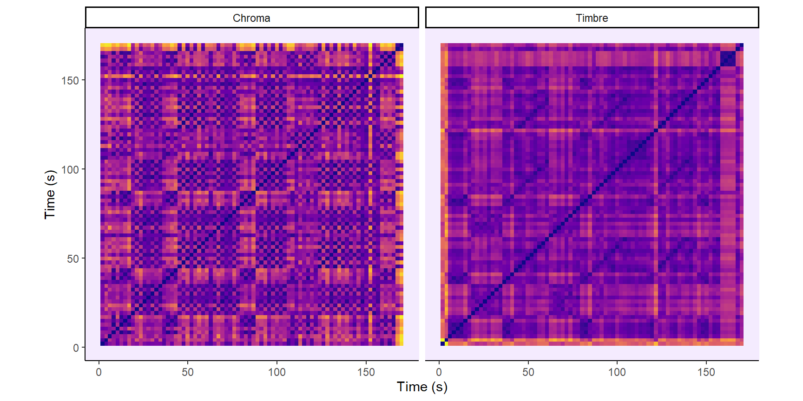
In general, it is interesting to see that the songs from the US and the UK are both a little under three minutes and have a clear start of the bridge at around two minutes. An interesting contradiction is that You cant hurry love is quite homogeneous, whereas the Korean song has a lot of new parts. Furthermore, the song by AKB48 has the clearest repetitions of the chorus but Wannabe seems to have a lot of really small repetitions.
In the chroma matrix the structure of the song can roughly be seen. When listening to the song you can follow along and find the couplets and chorus. However, there are no very clear repetition in the matrix that you may expect when listening to the song. In the timbre matrix there is one yellow line that stands out at around two minutes. When listening to the song it becomes clear that this is the very short part where there is no background music. Lastly, at the end you can also see some a bit thicker yellowish line. This is the outro of the song that is just instrumental.
Surprisingly, the repetition of the chorus is not as clear in the chroma matrix, although this sounds the same for a listener. A more clear repetition is visible between 35-60 s and 75-100 s. This period indicates the second part of the chorus. This is also quite unexpected since the rhythm stays the same but the lyrics change and still this is more visible than the chorus which is exactly the same every time. In the timbre matrix a yellow line can be seen at around two minutes, this indicates novelty. In this case, the novelty comes from the transition to the bridge, where a clear distinction in the music can be heard as well. However, after the bridge the song ends quite homogeneous.
In the chroma matrix there is not a clear checkerboard pattern that indicates the structure, there is not a lot of homogeneity. This is further confirmed by looking at the timbre matrix. As can be seen there, this song has a lot of novelty. Even when the lyrics are repeated, the background music changes which makes it seem as completely different according to the graph. Furthermore, there are big contrasts between some parts. For instance, the part between 70s and 80s is quite different from the parts before and after that.
For this song, the chroma and timbre matrices are very similar. The chorus and pre-chorus can be easily found, around 60s and 150s is the pre-chorus and 75-120s, 165-210s and 220-265s indicate the chorus. The yellow lines that indicate novelty are almost everytime a musical part.
Here Ill draw the general and final conclusions about what makes a girl group popular based on the graphs in the other tabs.